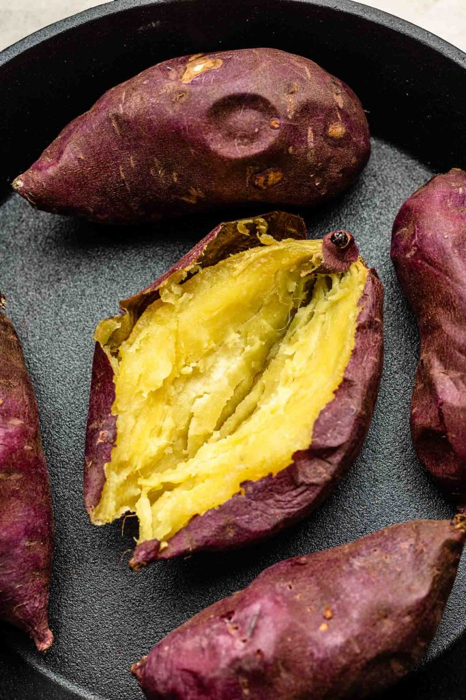

Baked Potatoes

Description
Recipe for a baked sweet potatoes. You can follow this for any potatoes of your choosing
but we personally love a good japenese sweet potatoe and find them hard to beat! It is
very simple and does not take much time to prep. A great side dish for any meal.
Ingredients
- Japenese Sweet Potates (As many as your pan will fit!)
- Freshly Ground Salt and Pepper
- Olive Oil
Steps
- Preheat the oven to 425 degrees F (220 degrees C). Wash sweet potatoes. Use a fork
or a sharp knife to poke holes in the potatoe.
- Place potatoe on tin foil and lightly coat with olive oil, salt and pepper. wrap
the potatoe completely with the foil and set on a baking sheet.
- Place baking sheet with potatoes in the oven and cook for approximately 45 minutes or
until you can stick a fork into the potatoe and it is soft to the middle.
- Remove from oven an let cool. Cut open and add butter, salt and pepper for taste.
Enjoy!
Home Page